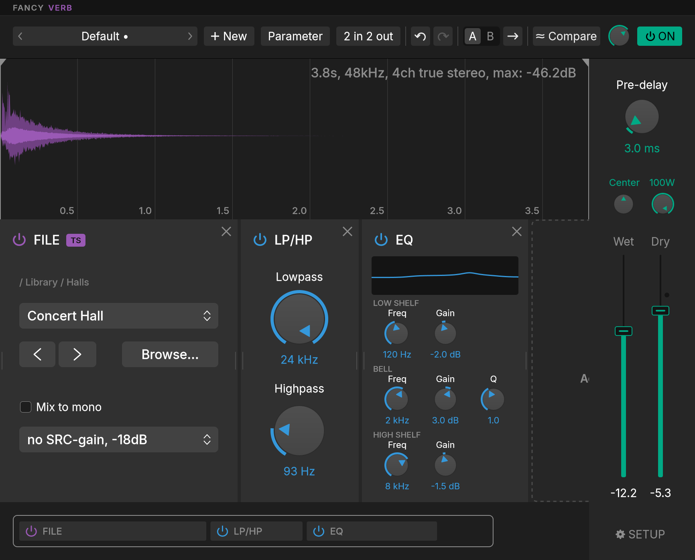

docs/verb.md, Phase 4 Wave 2: decay module, Decisions 1 to 3 A. New things in dashed yellow, on the plugin's real screenshot (1x coordinates).
A DECAY module card in the rack
Picked from the Add panel like any module, here after FILE and LP/HP. Three decay multipliers (0.25 × to 4 ×, 1 × by default) and two crossovers (Low 20 Hz to 1 kHz, 250 Hz; High 1 to 16 kHz, 4 kHz), with each band's measured RT60 before and after under its knob.

⏻DECAY
×
DECAY TIME
2.1 → 1.1 s
1.9 s
1.7 → 2.4 s
High can't grow past the IR's own tail: 2.4 of 2.6 s.
CROSSOVERS
RT60 measured per band, before → after.
⏻ DECAY
Built offline with the IR, so it costs no CPU while playing. A band whose decay can't be measured shows "can't measure" under its knob and is left as it is. All at 1 × gives back the same IR.